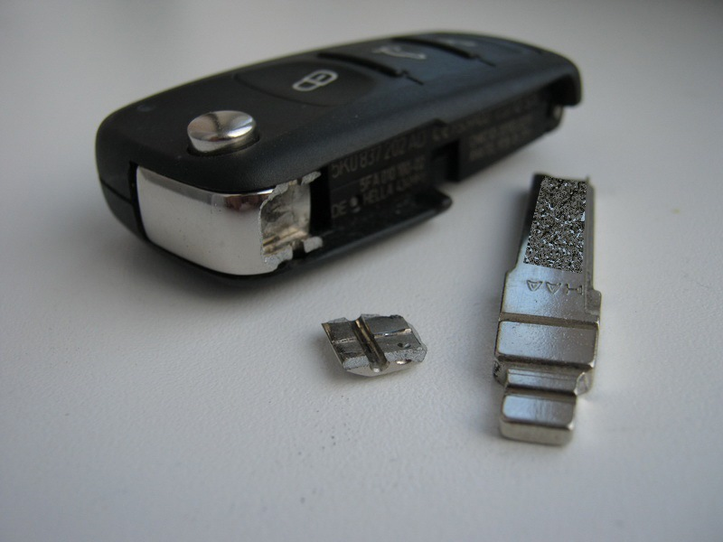

Ремонт викидного ключа авто в Ужгороді — від 300 грн

Викидний (фліп) ключ — найзручніший формат: компактний у кишені, лезо ховається. Але через 5-7 років активного користування механізм викиду стирається. Найчастіша поломка — лопнула пружина викиду. Також буває: не фіксується відкрите положення, кнопка викиду провалюється, хитається лезо. Ми ремонтуємо ключі усіх популярних авто: VW, Audi, Skoda, Renault, Ford, Hyundai, Kia, Opel, Peugeot, Citroen, Fiat — і не тільки.
Зламався викидний ключ?
Привозьте — діагностика безкоштовно, ремонт за 30 хвилин
Типові поломки викидного ключа
- Лезо не вилітає при натисканні кнопки — лопнула пружина або заклинило механізм
- Лезо вилітає але не фіксується відкритим — стерлася защіпка фіксації
- Лезо хитається у відкритому положенні — розширилися пази, потрібна заміна вісі
- Кнопка викиду провалюється — лопнула пружина кнопки
- Лезо не складається назад — погнулась защіпка
- Тріснув корпус біля місця кріплення леза — потрібна заміна корпусу
- Стерлося лезо — фрезеруємо нове за оригіналом
Ціни на ремонт викидного ключа
| Послуга | Ціна | Час |
|---|---|---|
| Заміна пружини викиду | від 300 грн | 20 хв |
| Заміна кнопки викиду | від 350 грн | 20 хв |
| Заміна вісі (осі обертання леза) | від 400 грн | 30 хв |
| Чистка та змащування механізму | від 250 грн | 15 хв |
| Заміна (фрезерування) нового леза | від 500 грн | 20 хв |
| Повна заміна корпусу викидного ключа | від 700 грн | 30 хв |
| Заміна корпусу + лезо + пружина (комплекс) | від 900 грн | 40 хв |
З якими марками авто працюємо
- VAG group: VW Passat, Golf, Tiguan, Polo, Touareg, Skoda Octavia, Superb, Fabia, Audi A3, A4, A6, Seat Leon, Ibiza
- Hyundai / Kia: Tucson, Santa Fe, Elantra, Sportage, Sorento, Cerato
- Renault / Dacia: Megane, Scenic, Captur, Duster, Logan
- Ford: Focus, Mondeo, Kuga, Edge
- Opel: Astra J, Insignia, Mokka
- Peugeot / Citroen: 308, 3008, 5008, C4, C5
- Fiat: Punto, Bravo, 500, Ducato
- Mitsubishi, Nissan, Mazda — всі моделі з викидним ключем
Як ми ремонтуємо викидний ключ
- Розбираємо ключ, оглядаємо механізм
- Визначаємо поломку — пружина, защіпка, корпус
- Підбираємо запчастину з нашого складу
- Замінюємо, змащуємо механізм спеціальним силіконом
- Збираємо ключ, перевіряємо роботу (50+ натискань)
Часті запитання
Чому не вилітає лезо викидного ключа?
Найчастіша причина — зламалася пружина викиду. Також буває: засмітився механізм, погнулась кнопка фіксації, ослабла защіпка. Замінюємо за 30 хвилин.
Скільки коштує замінити пружину у викидному ключі?
Заміна пружини викиду — від 300 грн з роботою. Маємо пружини для всіх популярних типів корпусів VW, Audi, Skoda, Hyundai, Renault, Ford.
Чи краще ремонтувати чи поставити новий корпус?
Якщо проблема тільки в пружині — ремонт. Якщо корпус ще й тріснутий або кнопки западають — економічніше замінити цілий корпус за 700-1200 грн.
Чи треба перепрограмовувати ключ після ремонту?
Ні. Чіп і плата ключа залишаються тими самими — ремонт стосується лише механіки.
Не впевнені в чому проблема?
Привозьте — діагностика безкоштовна, скажемо точну ціну